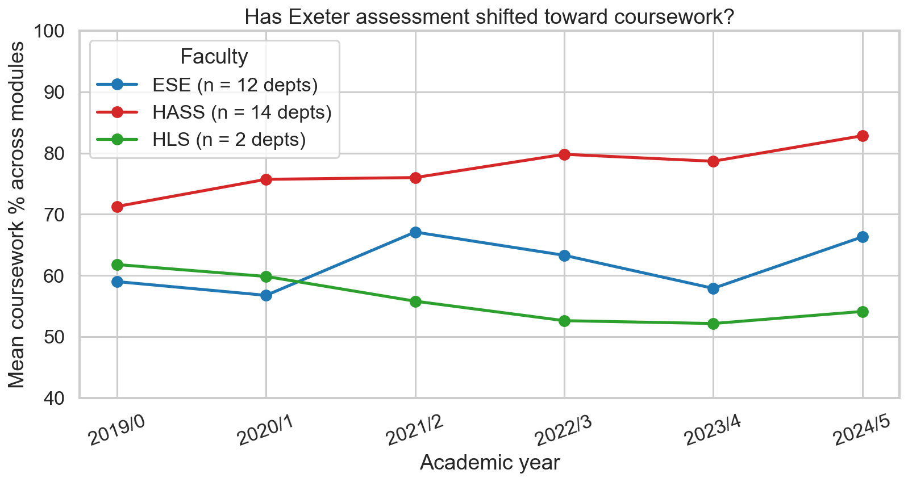
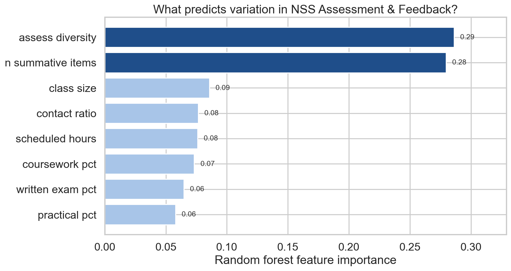

A data-driven look at the University of Exeter
How Exeter assesses its students
Some departments mark you almost entirely on coursework. Three still put most of your degree weight on a single exam paper. This project pulls together six years of published module data to look at who does what, and whether any of that pattern matches how satisfied students say they are.
Most Exeter students will recognise the experience of opening a new module descriptor and finding the assessment is either two pieces of coursework or one exam worth almost everything. From the student-facing side there is no obvious pattern. Economics runs heavy on exams, History runs almost none, and the Business School sits somewhere in between depending on the specific programme you ended up on.
To check whether the impression matches the reality, I scraped every undergraduate module Exeter has published since 2019/20 from the public Module Bank, which gives roughly 5,600 module-years after cleaning, and joined it to three years of National Student Survey results from the Office for Students. The project then asks three questions: how much variation there is between departments, whether anything has shifted since covid, and whether any of the assessment design lines up with NSS satisfaction scores.
Most of Exeter is now mostly coursework
Share of summative marks by assessment type, every UG department, 2024/25.
![Stacked bar chart showing the assessment mix for every Exeter department in 2024/25, sorted from most coursework at the top to least coursework at the bottom. Industrial Experience, Education and Anthropology are essentially 100 percent coursework. Most of the chart sits in the 80 to 100 percent coursework band. At the bottom, Economics, Mathematics and Physics are the only departments where written exams account for more than half the mark. Engineering, Law, Natural Sciences and Classics sit in a mixed band where exams are 30 to 40 percent.](output/figures/chart_1_assessment_mix.png)
Each bar is one Exeter UG department in 2024/25. Blue is coursework, orange is written exams, green is practicals. Bars sum to 100%.
Across the chart, written exams are no longer the default form of assessment at Exeter. Education, Anthropology and East Asian Studies are essentially 100 percent coursework, and most of the humanities (Drama, the Business School, Sociology, Philosophy, English Studies) sit in the 80 to 95 percent coursework band. Very few departments fall in the middle of the distribution.
Only three departments still award the majority of their marks through written exams: Economics (BEE), Physics (PHY) and Mathematics (MTH). Economics is the most exam-heavy, with around 62 percent of marks coming from written papers. A second group of departments (Engineering, Law, Natural Sciences, Classics, Computing) falls into a mixed band where exams account for 30 to 40 percent of the total. In the rest of the institution, exams contribute a clear minority share.
One thing missing from the chart is the textbook 50/50 split. Departments tend to commit either heavily to coursework or to a substantial exam component, with very little settled middle ground.
The shift looks very different depending on the faculty
Mean coursework share across all UG modules, by faculty, 2019/20 to 2024/25.

HASS is humanities, arts and social sciences. ESE is environment, science and economy. HLS is health and life sciences.
Each faculty shows a different pattern. The HASS line (red) is the clearest, with a steady twelve-point climb from 71 percent in 2019/20 to 83 percent in 2024/25. There is no obvious covid disruption and no reversal, just a continuous drift toward more coursework, consistent with the direction UK higher education has been moving for over a decade.
The ESE line (blue) is the more surprising of the three. Rather than dipping during covid, it spiked. The average coursework share in the science, engineering and economics faculty rose from 57 percent to 67 percent during 2021/22, the year that teaching was still partly online and exam logistics were difficult to run. Departments that normally rely on written exams switched to coursework because they had little alternative. By 2023/24 ESE had reverted close to its pre-covid baseline, and the current value of 66 percent is only slightly above where the series started, with no clear long-run trend.
The HLS line (green) is built from only two departments, so its movement is more volatile and the least reliable of the three. Even so, it is the only faculty to end the period with a lower coursework weighting than it started, falling from 62 percent to 54 percent and moving in the opposite direction to HASS. Taken together, HASS is moving steadily toward more coursework, ESE oscillates around its long-run average, and the smaller HLS signal moves the other way.
What actually predicts satisfaction isn't the exam-vs-coursework split
Random forest feature importance for predicting NSS Assessment and Feedback scores.

Higher bars mean a feature explains more of the variation in NSS Assessment and Feedback scores. Random forest, 500 trees, 5-fold cross-validation, n = 72 (department × NSS year) rows.
Of the eight module-shape variables included, two clearly stand out. Assessment diversity, which measures whether a module uses one, two or all three of the assessment channels, ranks first at 0.29. Number of summative items, the count of separately-marked pieces of work students complete in a year, ranks second at 0.28. Together the two account for 57 percent of the model's predictive power.
The three variables that capture the exam-versus-coursework split sit at the bottom of the chart. Coursework percentage ranks sixth, with written exam and practical percentages tied behind it. Combined, the three explain less than 20 percent of the variation in satisfaction.
This is the headline result of the project. The familiar policy debate over coursework versus exams, which absorbs a lot of attention in higher education, barely shows up in the satisfaction data. What students appear to respond to in their NSS Assessment and Feedback scores is the structure and pacing of assessment: how many channels they are marked through, how many separate pieces of work generate feedback, and how those pieces are spread across the academic year.
Assessment variety appears to matter more for student satisfaction than the balance between exams and coursework.
The result holds when the model is refit separately for each of the eight NSS themes (kept as a diagnostic outside the main charts). Different aspects of the student experience pick up different module features. Contact ratio dominates the Teaching theme, and scheduled hours dominate Student Voice. For Assessment and Feedback specifically, however, assessment diversity and summative-item count remain the top two predictors. The result is therefore not driven by a single confound, but reflects a consistent structural pattern.
How well can we predict satisfaction at all?
Cross-validated predicted versus actual NSS scores, every department in every year.
![Scatter plot of predicted versus actual NSS Assessment and Feedback scores, with one dot per department per year. The dashed diagonal is perfect prediction. Most points cluster between 73 and 80 on both axes, near the line. Two NSC points sit far above the line, around 85 to 88 predicted but 90 to 95 actual. Psychology (PSY) and PYC sit below the line at predicted around 75 but actual around 68. Engineering (ENG) and East Asian Studies (EAF) also sit below the line. The cross-validated R squared is 0.46 with a mean absolute error of 2.5 percentage points, and 72 observations.](output/figures/chart_4_pred_vs_actual.png)
Each dot is one Exeter department in one NSS year. The dashed line is where predicted equals actual. The model uses module structure only, with no information about lecturer quality, individual seminar sizes or feedback turnaround.
The cross-validated R² of the model is 0.46, with a mean absolute error of 2.5 percentage points. The eight module-shape variables therefore explain just under half the variation in department-level NSS Assessment and Feedback scores. Given that the model contains no information about teaching quality, individual lecturers or marking turnaround (the kinds of things students typically cite when explaining whether their course is good), this is more explanatory power than I expected.
The interesting cases are the points the model misses. Natural Sciences (NSC) sits well above the diagonal in both years, with actual NSS positivity in the mid-90s where the model predicts only mid-80s. The structural variables explain a large portion of the score, but not whatever NSC is doing on top of that. Possible explanations include the small cohort, the selectivity of the programme, distinctive teaching design, or something not captured in the dataset.
Psychology (PSY and PYC) sits below the line, with actual scores 6 to 10 percentage points lower than the structural predictors would forecast. Whatever holds back Psychology's NSS scores does not appear to be the shape of its assessment, but something else in the student experience. Engineering (ENG) and East Asian Studies (EAF) show a similar pattern.
The chart suggests that roughly half of the variation in student satisfaction with assessment can be attributed to the structural design of a module, while the remaining half sits in factors that are best described as departmental culture, which a spreadsheet of module descriptors cannot easily capture.
What this all means
Three points stand out from the analysis. The popular impression of Exeter as an exam-heavy university is now several years out of date. The default form of assessment is coursework, often overwhelmingly so, and the humanities faculty has been moving in that direction for at least six years. The science faculty fluctuates, but its long-run mean still sits comfortably above 50 percent coursework.
The assessment-method debate that absorbs a lot of attention in education policy does not show up in the satisfaction data. Whether a department leans on coursework or exams explains very little of why students rate their feedback experience higher or lower. What the data does pick up is structural: the variety of assessment channels used and the number of separate summative pieces produced over the year. Departments that perform well on these tend to score better, while those that rely heavily on a single assessment channel tend not to.
The dataset has clear limits, which should affect how confidently any of this is read. The patterns described above appear to be real, but they are probably best treated as a starting point for further investigation rather than a settled conclusion. The next section sets out the most important caveats.
Assumptions and limitations
What the NSS half of the dataset can and can't carry, in numbers.
The NSS sample is small once it is split eighteen ways. The NSS only surveys final-year undergraduates, not the wider student body, and Exeter's eligible finalist population in any given year is roughly a third of total UG enrolment. Across the eighteen Exeter subjects covered here, the published OfS files contain around 17,939 eligible finalists over 2023, 2024 and 2025, of whom 12,566 submitted a usable response. The aggregate response rate is therefore close to 70 percent, which is high for a survey, but the absolute number of responses is thinly spread once it is broken down by subject and year:
The median subject-year cell is built on around 160 responses from a finalist population of about 220, while the smallest cell (a specialist programme in a quiet year) contains only 20 responses. Subject-level positivity scores will therefore vary year to year with sampling noise that the random forest cannot distinguish from real signal. The 0.46 cross-validated R² is not wrong, but it sits on top of a noisier underlying dataset than the chart implies, and any single department's residual could plausibly shift by several percentage points on the following year's responses alone.
The NSS only extends back three years in this format. The Office for Students rewrote the survey in 2023. The question wording, the response scale (now 4 points rather than the previous 5-point Likert), the eight-theme grouping and the positivity calculation were all changed at the same time. The OfS itself flags pre-2023 and 2023-onwards results as not directly comparable, and there is no clean way to map the new theme scores onto the older surveys without applying assumptions that would not hold up under scrutiny.
Three survey years remain available (2023, 2024 and 2025), which is why the NSS portion of the project begins where it does, even though the Module Bank scrape covers 2019/20 onwards. With a maximum of six dept-year observations per Exeter department before subjects with no eligible finalist cohort are dropped, the model ends up with 72 rows. This upper bound will not move until at least one further survey cycle is published.
The model can describe structure, not culture. No information about lecturer quality, individual seminar group sizes, marker workloads or feedback turnaround times enters the random forest. The Module Bank does not publish those fields and the NSS does not publish module-level cuts. The variable being predicted is a department-average NSS positivity, not any individual student's experience of being marked. Roughly half of the variation in satisfaction sits in the structural features the model can observe, and the other half sits in features that it cannot.
How this was made
Data
Every module descriptor on Exeter's public Module Bank was scraped for academic years 2019/20 through 2024/25, including assessment percentages, scheduled and independent study hours, anticipated cohort size, and the count of summative assessment items. NSS results were downloaded from the Office for Students for survey years 2023, 2024 and 2025, filtered to UKPRN 10007792 (University of Exeter), full-time undergraduates, and CAH2 subject level.
Note on data collection
The Module Bank is a public-facing website that any visitor can read in a browser without an account. The scrape collected only information that is already openly published on those pages, with a one-second pause between requests so the load on Exeter's web server stayed minimal. No login was used, no authentication or paywall was bypassed, and no robots.txt directive was overridden. The scraped data is used here for an undergraduate research project and is not being redistributed beyond the aggregated figures shown above. This is consistent with both the standard treatment of publicly accessible web pages under UK practice, and the University of Exeter's expectations for student work that draws on its publicly published institutional information. NSS results were obtained from the Office for Students' published spreadsheets, which are released for general use.
Linking the two datasets
Modules were grouped by their three-letter code prefix (BEE for Economics, PYC and PSY for Psychology, and so on). A hand-built mapping table connects each prefix to its NSS CAH2 subject. Module features were credit-weighted within each prefix, then response-weighted across prefixes that share an NSS subject.
Modelling
The headline numbers come from a random forest regression with 500 trees and a minimum leaf size of 2, using 5-fold cross-validation. The same dataset (72 department-year rows) feeds both chart 3 (feature importance) and chart 4 (predicted vs actual). With a sample of this size, the cross-validated R² is the only honest measure of fit.
What's not in here
The Module Bank does not publish individual marker workloads, seminar group sizes, feedback turnaround times, or anything else that captures the lived experience of being marked. None of those variables enter the model. The "satisfaction" being predicted is a department's average NSS positivity, not any individual student's experience.
Code and replication
All scraping, cleaning, merging and analysis is in seven Jupyter notebooks in the project repository, runnable end-to-end from a clean clone. The README explains the process, the reasoning behind each design decision, and the quirks that surfaced along the way.